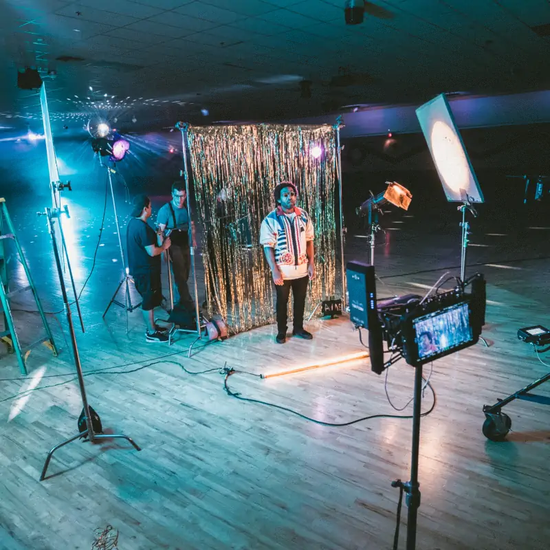

Digital Cinema
at NAIT

ProducerCoordinates effective, creative and collaborative management of priorities, such as selecting the script; coordinating writing, directing and editing; and arranging financing. |
DirectorDirects the artistic and dramatic aspects of a film or script. Responsible for giving direction to the crew and actors to fulfill the creative vision. Directors must be able to mediate differences in creative visions and stay within budget. |
ScreenwriterWrites screenplays or scripts on which films, television programs videogames or any other mass media are based. |
Director of PhotographyOversees the camera and lighting crews working on film, television production or any other mass media. A cinematographer is responsible for artistic and technical decisions related to camera work or lighting such as, film stock, lenses and filters. |
Film EditorWorks alongside producers/directors to remove unneeded or unwanted sections of a film and to fit the pieces of a film together to create the finished product. |
Sound TechnicianResponsible for assembling, operating and maintaining technical equipment used in recording, amplifying and reproducing sound. Sound Technicians identify the sound requirements for the production and act to ensure they can produce that sound. |

Lighting TechnicianResponsible for rigging the stage and location sets as well as controlling lights for production. Lighting technicians work with the cinematographer to ensure the cinematographer’s vision for lighting becomes a reality. |

Online StreamerA self-published content creator who primarily distributes their media through the internet. Responsible for their own lighting, sound, editing and cinematography. |
Notable Alumni
Jarred LandGraduating in 1995 from NAIT, Jarred Land is a Producer, Cinematographer and Businessman. Jarred is the founder and operator of one of the largest digital camera movie making communities in the world, DVXuser.com. Jarred is also the current President of Red Digital Cinema, one of the largest players in digital camera technologies used worldwide on films such as, Guardians of the Galaxy Vol. 2, 300: Rise of an Empire and the television medical drama ER. |
Bruce WoloshynBruce Woloshyn is a Digital Effects Artist and Supervisor. Since graduating from NAIT in 1984, Bruce has gone on to lead a successful career working on the visual effects for films such as Skyscraper and Night at the Museum. Bruce’s first major project was working on the visual effects for Stargate SG-1 and Stargate Atlantis, for which he received the Gemini Award for Best Visual Effects. Bruce currently works as the Visual Effects Supervisor for Method Studios. |